5th Grade Science & Health Worksheets
788 Science & Health resources for 5th Grade, ready to print: Relief, PFAS, Fiji, Ecuador and more. Each resource page shows the grade range, page count and a preview and links straight to the product on TpT.
788 resources

Chestnut Tree Reading Comprehension Passages | Science Scavenger Hunt 5-6
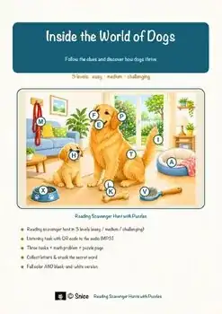
Dog Reading Comprehension Passages | Biology Scavenger Hunt 5-6
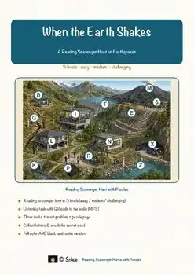
Earthquakes Reading Comprehension Passages | Earth Science Scavenger Hunt 5-6
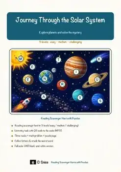
Solar System Reading Comprehension Passages | Reading Scavenger Hunt 5-6
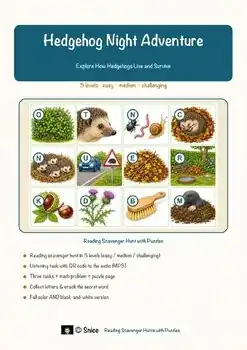
Hedgehog Reading Comprehension Passages | Science Scavenger Hunt 5-6
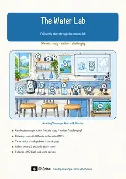
Water Reading Comprehension Passages | Science Scavenger Hunt 5-6
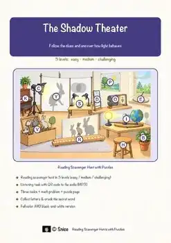
Light & Shadow Reading Comprehension Passages | Physics Scavenger Hunt 5-6
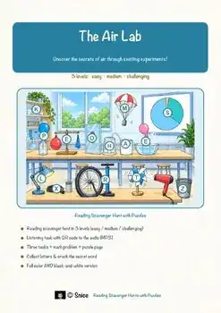
Air Reading Comprehension Passages | Science Scavenger Hunt 5-6
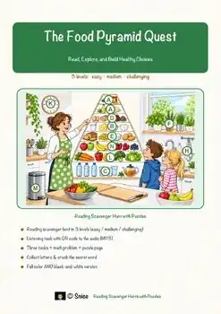
Food Pyramid Reading Comprehension Passages | Health Scavenger Hunt 5-6
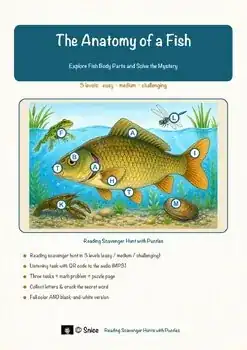
Fish Anatomy Reading Comprehension Passages | Science Scavenger Hunt 5-6
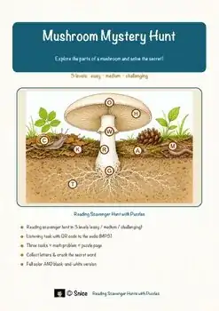
Mushroom Reading Comprehension Passages | Science Scavenger Hunt 5-6
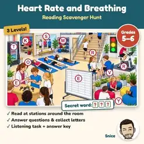
Heart Rate Reading Comprehension Passages | Health & PE Scavenger Hunt 5-6
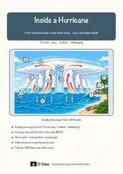
Hurricanes Reading Scavenger Hunt | Weather Science Escape Activity 5th 6th
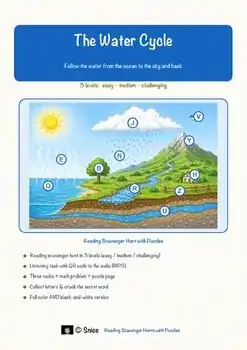
Water Cycle Reading Scavenger Hunt | Earth Science Escape Activity 5th 6th
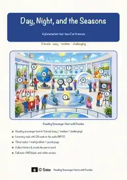
Day and Night & Seasons Reading Scavenger Hunt | Earth Science Escape Activity
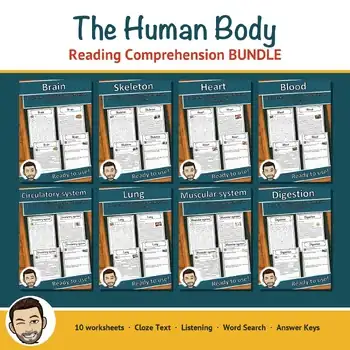
Human Body Reading Comprehension BUNDLE | Brain, Heart, Skeleton & More
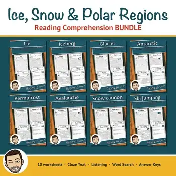
Winter Science Reading Comprehension BUNDLE | Ice, Glaciers & Polar Regions
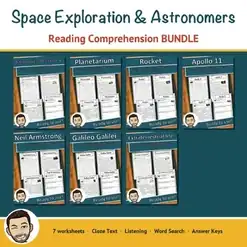
Space Exploration Reading Comprehension BUNDLE | Apollo 11 & Rockets
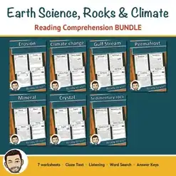
Earth Science Reading Comprehension BUNDLE | Rocks, Minerals & Climate
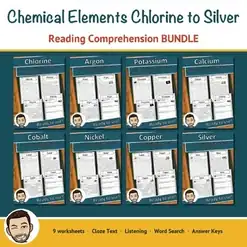
Chemical Elements Reading Comprehension BUNDLE | Chlorine to Silver
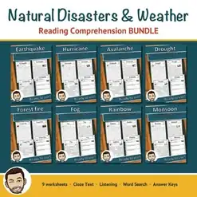
Natural Disasters & Weather Reading Comprehension BUNDLE | Cloze
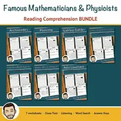
Famous Scientists Reading Comprehension BUNDLE | Mathematicians & Physicists
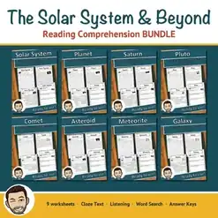
Solar System Reading Comprehension BUNDLE | Cloze, Listening & Word Search
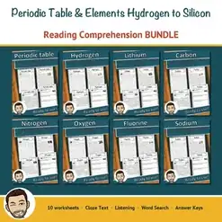
Periodic Table Reading Comprehension BUNDLE | Hydrogen to Silicon
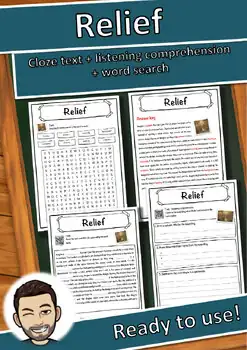
Relief – Reading Comprehension: Cloze Text, Listening Task & Word Search
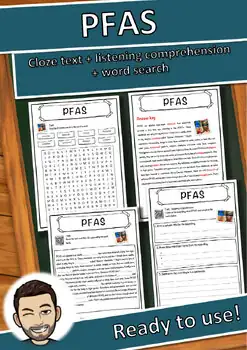
PFAS – Reading Comprehension: Cloze Text, Listening Task & Word Search
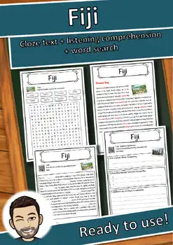
Fiji – Reading Comprehension: Cloze Text, Listening Task & Word Search
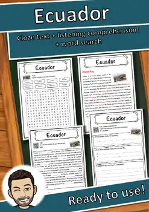
Ecuador – Reading Comprehension: Cloze Text, Listening Task & Word Search
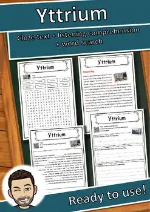
Yttrium – Reading Comprehension: Cloze Text, Listening Task & Word Search
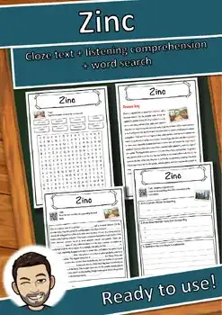
Zinc – Reading Comprehension: Cloze Text, Listening Task & Word Search
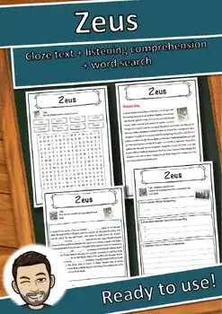
Zeus – Reading Comprehension: Cloze Text, Listening Task & Word Search
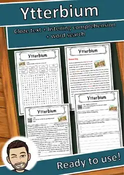
Ytterbium – Reading Comprehension: Cloze Text, Listening Task & Word Search
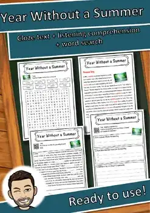
Year Without a Summer – Reading Comprehension: Cloze, Listening & Word Search
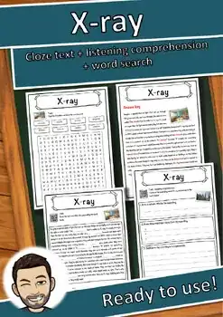
X-ray – Reading Comprehension: Cloze Text, Listening Task & Word Search
World Health Organization – Reading Worksheet: Cloze, Listening & Word Search
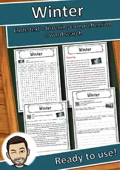
Winter Reading Comprehension Passage & Questions | Word Search Grades 5-8
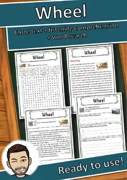
Wheel – Reading Comprehension: Cloze Text, Listening Task & Word Search
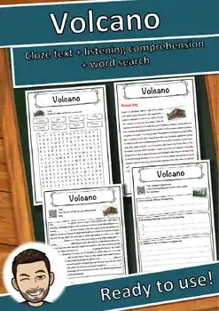
Volcano – Reading Comprehension: Cloze Text, Listening Task & Word Search
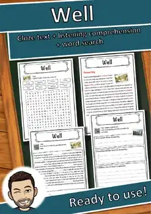
Well – Reading Comprehension: Cloze Text, Listening Task & Word Search
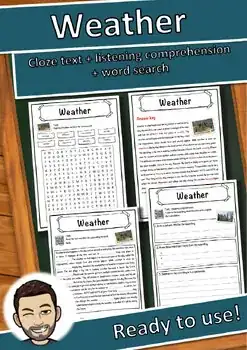
Weather – Reading Comprehension: Cloze Text, Listening Task & Word Search
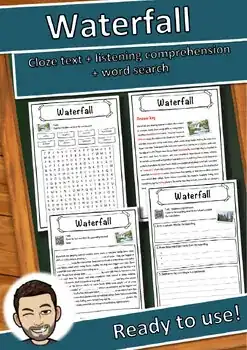
Waterfall – Reading Comprehension: Cloze Text, Listening Task & Word Search
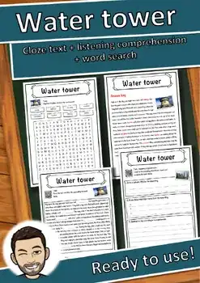
Water tower – Reading Comprehension: Cloze Text, Listening Task & Word Search
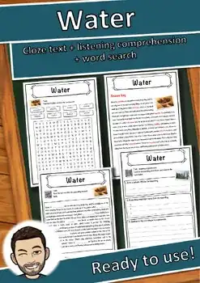
Water – Reading Comprehension: Cloze Text, Listening Task & Word Search
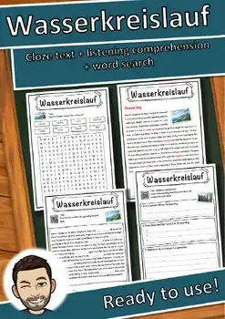
Wasserkreislauf – Reading Comprehension: Cloze, Listening & Word Search
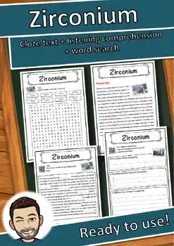
Zirconium – Reading Comprehension: Cloze Text, Listening Task & Word Search
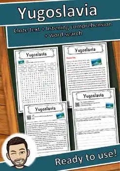
Yugoslavia – Reading Comprehension: Cloze Text, Listening Task & Word Search
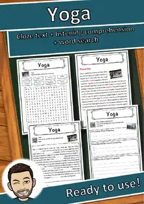
Yoga – Reading Comprehension: Cloze Text, Listening Task & Word Search
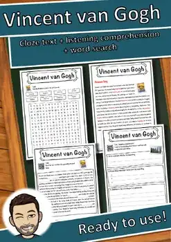
Vincent van Gogh – Reading Comprehension: Cloze, Listening & Word Search
No resources found – try a different search term or filter.